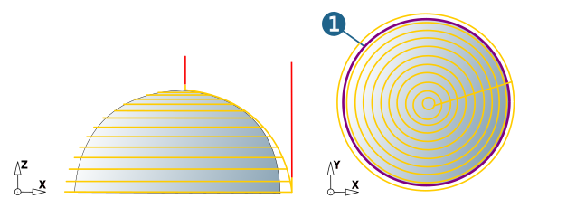
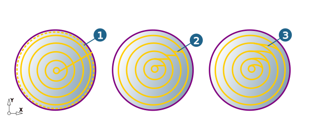
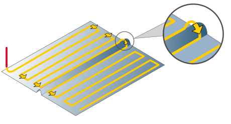
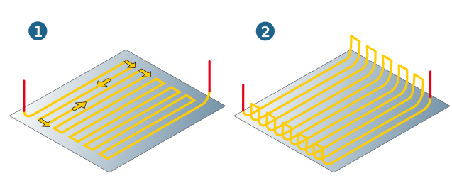
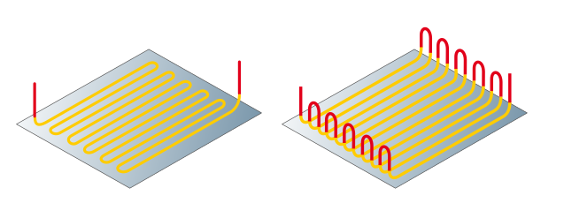
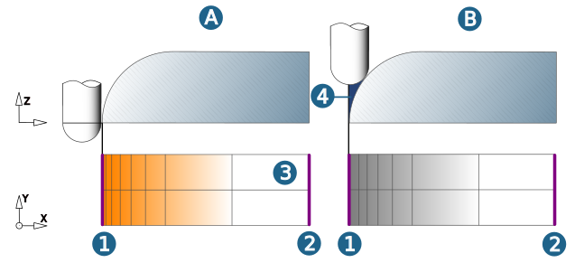

Strategy
Infeed strategy
Equidistant: Machining with constant infeed.
Profiles (1): It is possible to select multiple closed profiles (boundaries) that are not nested.
|  |
Offset: The selected profile curves are offset with the defined value (positive/negative).
Use as 3D curve: The selected profile curves are not projected onto the machining surfaces.
Machining always takes place parallel to a contour and the limited area is machined in Axis mode. The path ends when the tool axis is located on the curve.
Path direction / Stepover direction
The path direction is either Clockwise or Counterclockwise. The stepover direction is either inside-out or outside-in.
Toolpath connection
Skip first path: The first toolpath (1) is calculated but not machined. Avoids double machining when the selected machining curve has been extracted from the toolpath in the last machining plane of a preceding plane-by-plane cycle (for example, Z Level Finishing).
Connect factor: Length and rounding of the ramp-shaped transition between the planes, depending on the tool diameter.
Ramp length = Tool diameter x Connect factor.
The Connect factor value should be defined in relation to the path distance (infeed) and the machine kinematics. The larger the factor, the smoother the connection transition between the paths will be, but a larger factor will also increase the calculation time.
(2) Connect factor = 0.5, (3) Connect factor = 2.
|  |
Infeed strategy
Flow: This strategy is particularly suitable for HSC machining.
Profiles: Two guide curves (1, 2), which do not intersect and that have the same direction, must be defined as profiles.
Reverse direction
If the guide curves are in an opposed direction, reverse the direction of one guide curve (1st profile / 2nd profile). In the case of closed curves, the start positions must be aligned, that is, are not displaced from one another. In the default setting, the first milling path runs on the inner (shorter) guide curve and the first infeed is executed to the left of the first milling path.
Synchronize toolpaths
Equal (A): The two guide curves are divided up into the same number of segments. The start and end points of the respective part segments are linked.
Distance (B): Here, synchronisation uses lines with the shortest distance in each case between the first and second guide curve. Make sure that a unique point on the second curve is allocated to each point on the first curve and that this second point has the shortest distance to the first point from the direction of the tool axis.
Infeed mode
The infeed mode describes the type of horizontal stepover between the end point of a milling path and the start point of the following path. The Infeed mode does not apply to the Pocket profile.
With the options Zigzag direct and Zigzag smooth, the machining direction changes after each passed profile. An approach macro is used for the infeed to the first milling path and a retract macro is used for retraction after the last milling path.
|  |
Note
If the linear movement would cause damage to the workpiece, the system guides the tool with surface contact (no material being removed) around the workpiece.
Zigzag direct: If no return macro is enabled (1), the infeed movement is carried out on the shortest path in the machining feedrate (G1) on the surface. If a return macro is enabled (2), every retract and infeed movement is corrected by the selected retract and approach macro. Depending on the defined retract mode, the horizontal stepover occurs at the clearance distance in G1 or at the clearance plane in G0.
|  |
Zigzag smooth: The infeed between the milling paths is the shape of loop. These loops reduce jolting and the mechanical load on the machine is reduced. This strategy is primarily intended for high-speed milling. The limiting boundary may be traversed when moving along the loops.
|  |
With the Diagonal and Parallel options, the machining direction is always the same and defined by the profile direction. The horizontal stepover is performed relative to the defined retract mode to the security clearance in G1 or security plane in G0. Each retract and infeed movement is corrected by the selected approach and retract macro.
When the Diagonal option (1) is used, the infeed is diagonal from the end point to the next start point. When the Parallel (2) option is used, the tool initially retracts parallel to the generated milling path to the start point of the (vertical) infeed movement. This is followed by a horizontal stepover using the shortest distance possible.
 |
Additional surfaces
(A) Machining of steep areas through selection of profile curves (1 and 2) and Drive surfaces (3). The defined profile curves must lie on the selected drive surface areas. This method ensures that, even in steep areas, no residual stock (4) remains, as could be the case when applying the Flow (B) infeed strategy.
|  |